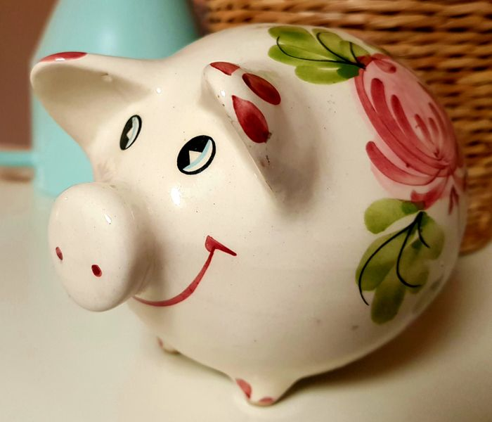
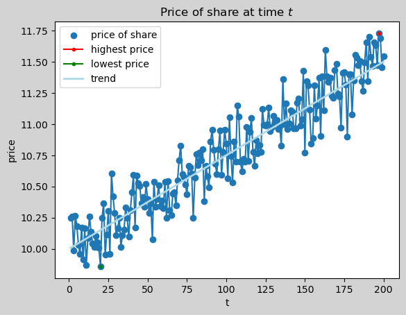
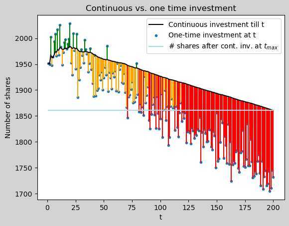
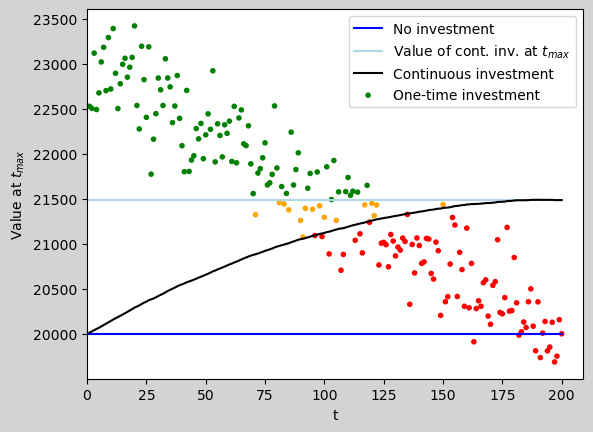

We will simulate some numbers for a fictional assets price time series. The prices will increase on the long run, but will have some volatility. Here is how our simulation looks like for 200 time slots:
Disclaimer
This blog post is not a financial advice! This is a toy example. This blog post is full of unrealistic assumptions. All numbers are made up. Reach out to a professional financial advisor you trust, if you need financial advise. And most important, take a spreadsheet and do the math yourself with your numbers and your assumptions.

One dime at a time?
One night I’ve watched some YouTube videos about investment strategies. One example was to follow a saving plan and put the same amount of money into ETFs on a regular basis, say 100 Euro every month. In the interview a question come up: What would happen when the market goes down and the portfolio looses value? The answer was pretty simple: If you invest regularly then you hit the market when it goes up the one day and when it goes down the other day. So the volatility doesn’t matter that much on the long run. This intuitively made sense to me: The regular investments smooth out the volatility. And since you can’t predict the stock prices, it’s hard to time the market (predicting when buying is cheap over a short period of time).
Is my intuition about the constant investments reasonable? Let’s find out in this blog post.
By the way, this question made me also think about a proper refueling strategy witch I covered in another blog post.
A fictional asset

The trend line indicates the general price increase on the long run. The green dot marks the lowest price and the red dot the highest price in the time range.
With an investment of € 20,000 at the lowest price at t=20 and selling at the highest price at t=197 the return is 18.96% and yields € 3,792.
Two investment strategies
Since we don’t know in advance when the price will be lowest and highest, we consider two investment strategies and see how they play out.
In both strategies we start out with € 20,000 cash.
Strategy 1: One-time investment
The entire amount of money is investment at once. We will look how this plays out at various points in time.
Strategy 2: Continuous investment
The cash is split equally over the period of time and at every step the same amount of money is invested.
$ investment_t = 20,000 / 200 = 100.00 $
Let’s see how many shares we can buy with both strategies:

Blue dots: \[ onetime(t) = \frac{cash}{price_t} \]
Black line: \[ \begin{aligned} cont(t) &= \sum^t_i{ \frac{cash/t}{price_i}} \\ &= \frac{cash}{t} \sum^t_i{ \frac{1}{price_i}} \end{aligned} \]
Light blue line: \[ contmax(t) = cont(n) \]
The blue dots mark the number of shares that can be purchased when the entire money is invested at once at the given time t.
The black line indicates the number of shares that can be bought when the entire investment is equally spread from t=0 up to a given t.
The light blue line highlights the number of shares of the last entry of the black line, hence the cash is equally invested over the entire period of time.
A green line marks the one-time investment that always reach a higher number of shares compared to the continuous investment, regardless of the holding duration.
A red lines indicates the one-time investment that can never reach the number of shares of the continuous investment at any time in \(0<t<=n\).
An orange line marks the one-time investment that has fewer number of shares as the continuous investment at the given time, if the entire cash has been equally distributed to the given t. However, if the continuous investments are spread for a wider period of time, the one-time investment will be superior to the continuous investment at a later point in time.
With our dummy data the strategy to put a big investment at once is good if the investment can stay invested untouched for a long period of time. If the money needs to shortly be withdrawn from the investment the continuous strategy is preferable, regarding number of shares. The tipping point between the strategies is close to \(t/2\).
Let’s see, how the amount of shares result in value at \(t=n\),

Blue line: \[ cash(t)=cash \]
Black line: \[ \begin{aligned} cont(t) &= inv_{acc_t}+cash_{remaining_t} \\ &= p_n*\frac{cash}{n}\sum^t_i{\frac{1}{p_i}} + cash*(1-\frac{t}{n}) \end{aligned} \]
Light blue line: \[ contmax(t) = cont(n) \]
Dots: \[ onetime(t) = p_n*\frac{cash}{p_t} \]
The blue line is our net worth if we don’t invest and keep cash for the entire period of time.
The black line indicates the net worth in a continuous investment strategy. At time t the number of shares that are accumulated sofar are multiplied by the price at the end of the time period. Also, the remaining cash at time t is added to the investment value.
The light blue line highlights the net worth of the continuous investment at the end of the period of time.
The dots indicate the value of a one-time purchase at the end of the period of time.
A red dot one-time investment is always worse than the continuous strategy.
A green dot one-time investment results in a higher net value at the end of the period compared to the continuous investment.
An orange dot one-time investment is superior to the continuous investment for a certain period of time. But if the continuous strategy will go on till the end, the orange dot will result in a smaller net worth.
The light blue and black line are highly volatile, when we change the duration, since it depends only on the last price. If the period gets shortened the area of the green, orange and red dots will change accordingly. One idea to reduce volatility the selling can be spread over many periods, like the continuous strategy to accumulate shares.
Again, the strategy to invest all at once is preferable, if the investments won’t be sold for a long time. If the investment needs to be sold at any time a continuous strategy is preferable with this dummy data.
Conclusion
This example only describes a fictional scenario where the prices go up on the long run. We also haven’t thought at what point(s) in time to sell the shares to actually get the best out of the investment.
From a personal view a continuous strategy seams appealing. This also makes sense considering a continuous income stream (such as salary) which would make this strategy applicable.
And as said in the beginning, that’s not a financial advise. So please make up your mind with your own calculations.